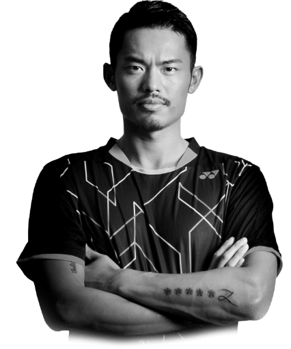

Lin Dan
The greatest badminton player of all time

Lin Dan in black t-shirt posing for the official Yonex merchandise
Here's a timeline of Lin Dan
- 1983 - Born in Longyan, Fujian, China
- 2004 - Lin had a good start to 2004, earning the BWF's number one world ranking for the first time in February. He helped China win the qualifying round of Thomas Cup and then captured the Swiss Open.
- 2005 - Lin retained his number one world ranking during 2005, winning his second German and Hong Kong Open titles, as well as the Japan Open, China Masters, and World Cup tournaments.
- 2006 - Lin started the season by reaching the semifinals of the German Open, and had a same result in China Masters and China Open. He failed to win the Malaysia Open in June, which saw his opponent Lee Chong Wei produce a superb display to save the title after being 13–20 down in the deciding game.
- 2007 - Lin Dan entered 2007 with a loss to South Korea's Park Sung-hwan in the round of 16 at the Malaysia Open. A week later he captured the Korea Open by defeating Chinese teammate Chen Jin in the final.
- 2008 - In the Beijing Olympic Games, he beat Hong Kong's Ng Wei in the first round, Park Sung-hwan in the second round, and Peter Gade in the quarterfinals. He then beat his teammate Chen Jin in straight sets to set up a "dream" final against Lee Chong Wei. However, the final was a one-sided match as Lin demolished Lee 21–12, 21–8, and became the first men's singles player to win the Olympic gold as a first seed.
- 2009 - In March, at his first tournament appearance of 2009, Lin won his fourth All England title without dropping a game, defeating Lee Chong Wei in the final. After this dominant performance, he lost to Lee in the final of Swiss Open a week later.
- 2010 - After starting the season disappointingly with quarterfinal losses at both the All England and Swiss Opens, Lin won his first title of the year at the Badminton Asia Championships in New Delhi, which also marked his first victory at this annual event.
- 2011 - Lin began the year with a withdrawal in the Malaysia Open's quarterfinals, which marked his third consecutive withdrawal since late 2010. This action brought some criticism, particularly by well known fellow competitor Taufik Hidayat.
- 2012 - Unlike the 2008 Olympic final this one was no cakewalk for Lin. He lost the first game to Lee but came back strongly to take the second. The rubber game was a thriller which saw Lin claw back from slight deficits most of the way to finally prevail 21-19. An ecstatic Lin thus became the first men's singles player to retain the Olympic title, while Lee, now almost 30, was once again foiled at one of the sport's two biggest events (aside from the Thomas and Uber Cups), the Olympics and the World Championships.
- 2013 - After his 2012 Olympic victory Lin did not make another tournament appearance until the 2013 Badminton Asia Championships, in April where, citing injury, he withdrew from the quarterfinals.
- 2014 - After seven month tournament absence Lin, down to 104th in the official world rankings, returned in April and took titles in the China Masters and the Badminton Asia Championships in quick succession.
- 2015 - In April, Lin won the men's singles title at the Badminton Asia Championships in China, defending his title won the previous year in South Korea. He defeated compatriot Tian Houwei 21–19, 21–8 in a match that lasted 50 minutes in the central city of Wuhan.
- 2016 - In March, Lin defeated Taiwan's Chou Tien-Chen in three hard games to clinch his seventh men's singles title at the German Open. A week after this win, Lin regained his All England title in Birmingham England, giving him his 6th victory at this prestigious event. In impressive form, he beat compatriot Tian Houwei 21–9, 21–10 in the final.
- 2017 - In March, at the prestigious All England Championships Lin defeated Viktor Axelson in the quarterfinals but was eliminated in the semifinals by his countryman Shi Yuqi, more than twelve years Lin's Junior.
- 2018 - In March, the 34-year-old Lin tied Rudy Hartono's record of reaching ten All England men's singles finals, but was foiled in his try for a seventh title by his much younger compatriot, Shi Yuqi.
- 2019-2020 - At 35, Lin Dan won his second Malaysia Open title in 2019, beating higher ranked compatriots Shi Yuqi and Chen Long in the semifinals and finals respectively.
Lin won the Eddie Choong Player of the Year award for two consecutive years in 2006 and 2007. He also secured the BWF Best Male Player of the Year in 2008. Lin was voted Most Valuable Player (MVP) during the 2010 Asian Games in Guangzhou, China. On 16 January 2011, he was named China's best male athlete for 2010 in China Central Television's Sports Personality of the Year poll for his clean sweep in major badminton titles.
-- Wikipedia
If you have time, you should read more about this incredible human being on his Wikipedia entry